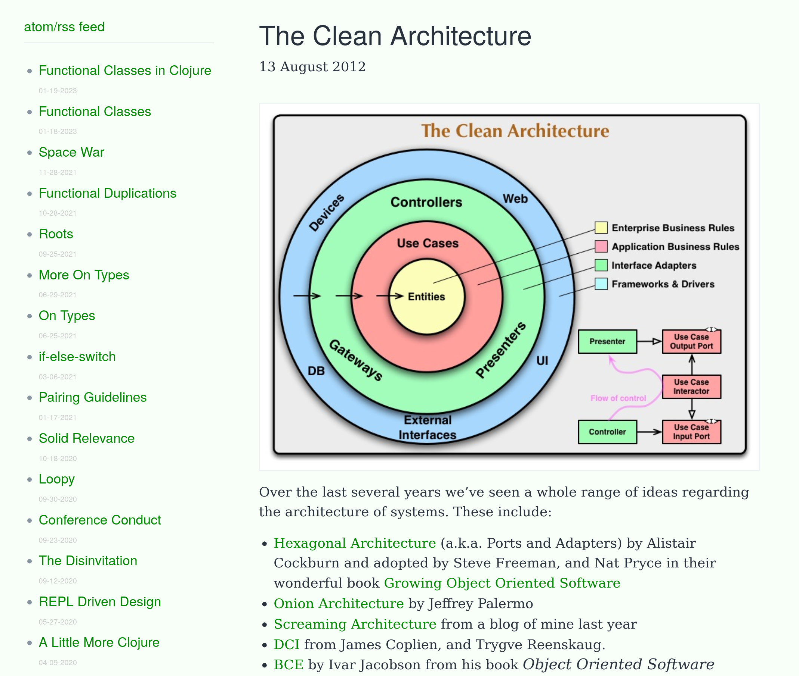

Про The Clean Architecture

Конечно, говоря про Clean Architecture, нельзя обойти стороной книгу Роберта Мартина “Чистая Архитектура”.
Это замечательная книга. В ней можно найти большое количество исторического контекста, с помощью которого Мартин наглядно демонстрирует необходимость введения новых абстракций.
Но не менее полезной можно считать дистиллированную версию в блоге Clean Coder. Автор заметки — тот же Роберт Мартин. Если Вы не знакомы с Clean Architecture, то статья станет хорошей отправной точкой.